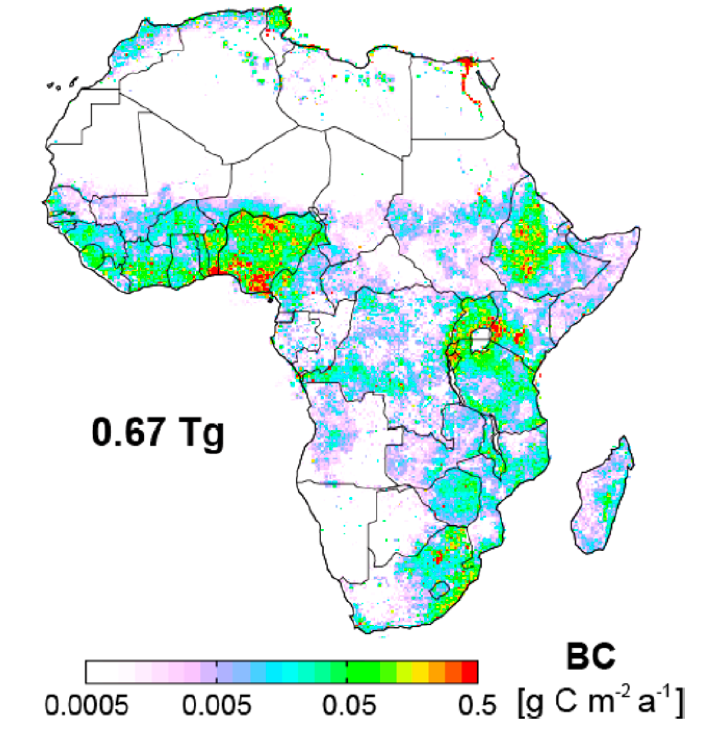

DICE-Africa Regional Emission Inventory

DICE-Africa black carbon (BC) emissions in 2006
Data Description:
DICE-Africa includes emissions from household and commercial fuelwood use, household crop residue burning, charcoal production and use, gas flaring, adhoc oil refining (Niger Delta only), kerosene use, diesel/petrol generators and vehicles (including motorcycles). Adhoc oil refining is for 2006 only, as data on annual changes in this source are limited. The reference provided below is for version 1.0. Version 1.1 of the DICE-Africa inventory is available for download below. Updates incorporated in version 1.1 address errors identified after publication. These include errors in emission factors of all chemical compounds for charcoal product and organic aerosol emission factors for cars. Data are in COARDS compliant NetCDF format at 0.1° x 0.1° mapped to GEOS-Chem chemical tracers.
Data Access:
Download links below are for compressed and zipped files for each year of the inventory:
2006 (compressed file size: 89 MB)
2013 (compressed file size: 91 MB)
How to Implement in Models:
Anthropogenic sources not in DICE-Africa (on-grid energy production, formal industry) needs to come from other inventories like EDGAR or CEDS. DICE-Africa is already included in the GEOS-Chem chemical transport model since version 12.0.0. Version 1.1 of DICE-Africa is in GEOS-Chem version 12.5.0.
Contact:
Please contact Eloise Marais or Christine Wiedinmyer for queries or additional information.
Reference:
E. A. Marais, C. Wiedinmyer, Air Quality Impact of Diffuse and Inefficient Combustion Emissions in Africa (DICE-Africa), Environ. Sci. Tech., 50, 10739-10745, 2016, doi:10.1021/acs.est.6b02602. [Link to article]
Ongoing Work:
DICE-Africa version 2.0 is under development and will include an improved representation of charcoal production and use with updated energy statistics data from the UN for 2014.